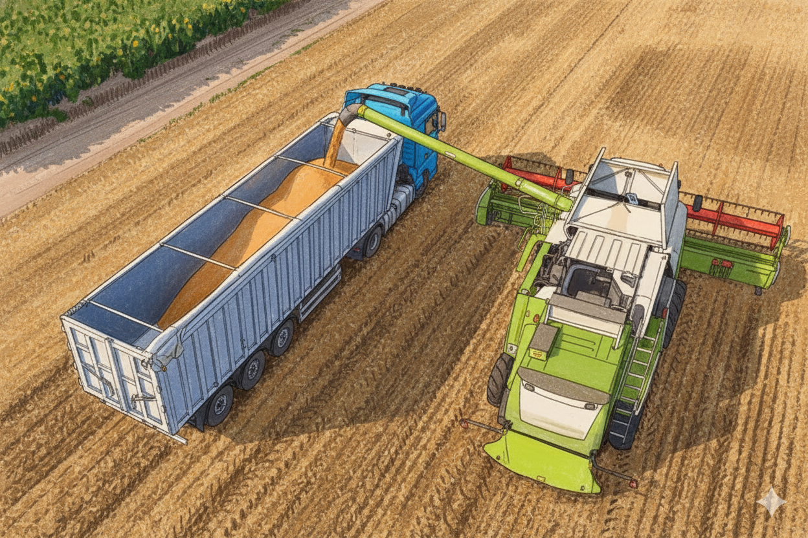

Transporte de Granos y Semillas
Transporte seguro y controlado para productos agrícolas secos, evitando pérdidas y contaminación.
Soluciones confiables y adaptadas a las necesidades de los productores rurales.
Transporte seguro y controlado para productos agrícolas secos, evitando pérdidas y contaminación.

Camiones con sistema de refrigeración para mantener la frescura y calidad durante todo el trayecto.

Traslado de tractores, cosechadoras y otros equipos de forma segura y eficiente.
Regístrate y conecta con transportistas disponibles en tu zona.
Comenzar Ahora